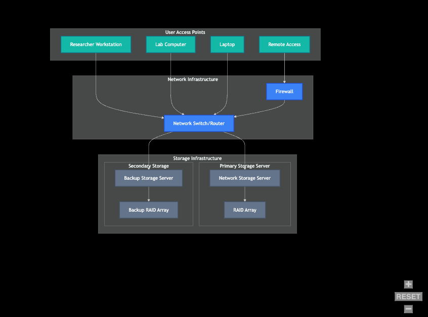
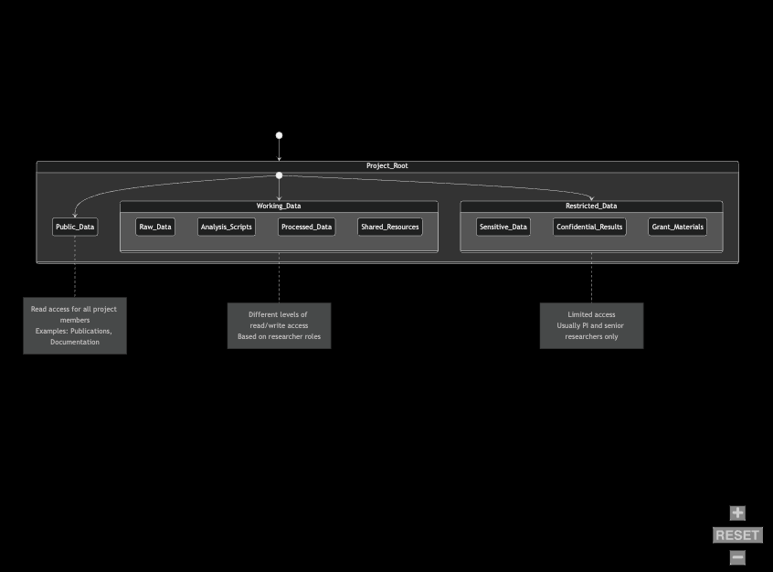
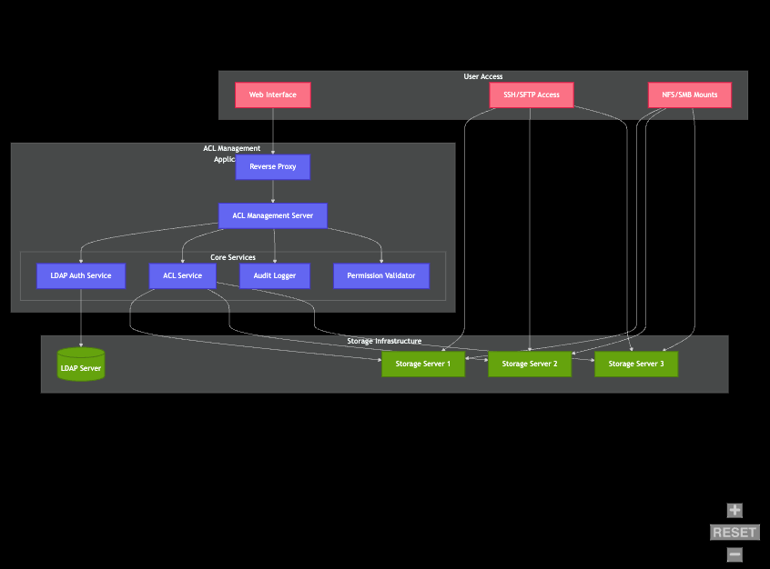
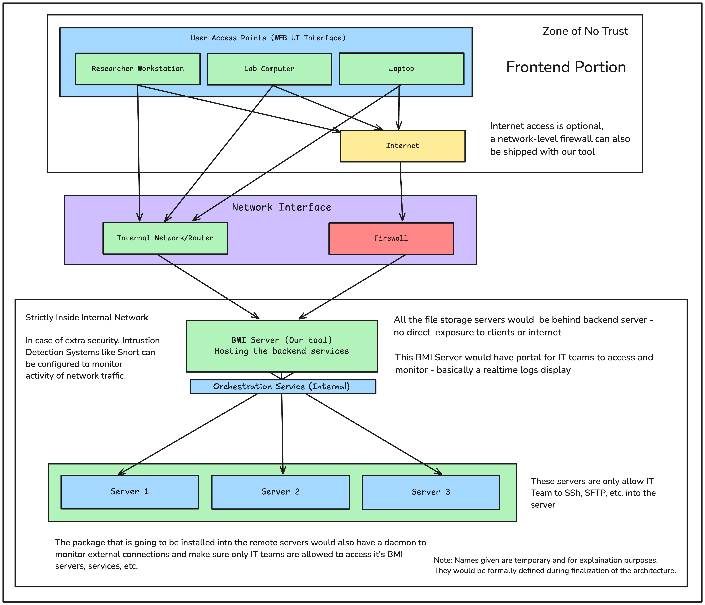
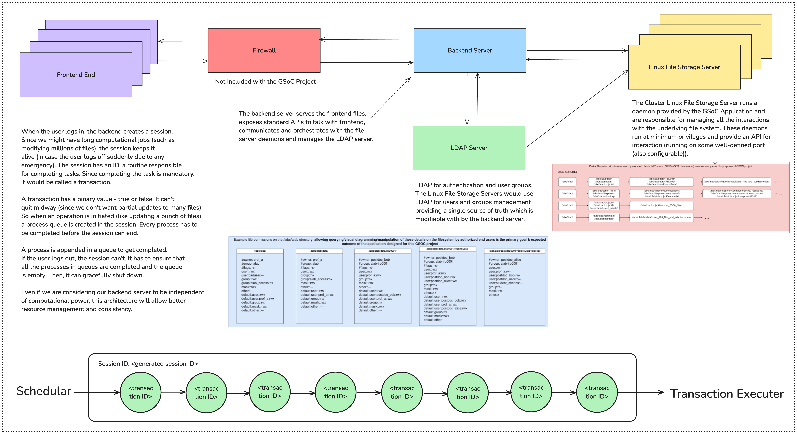
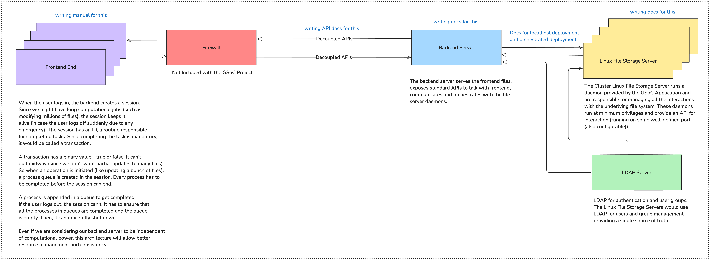
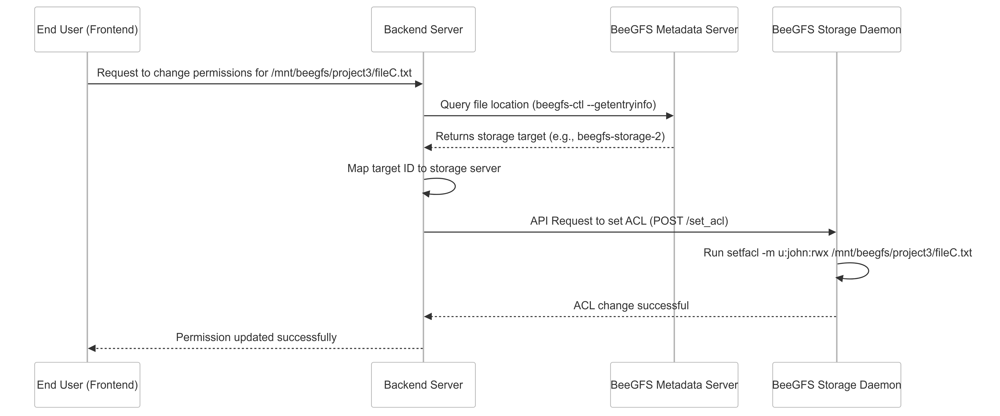
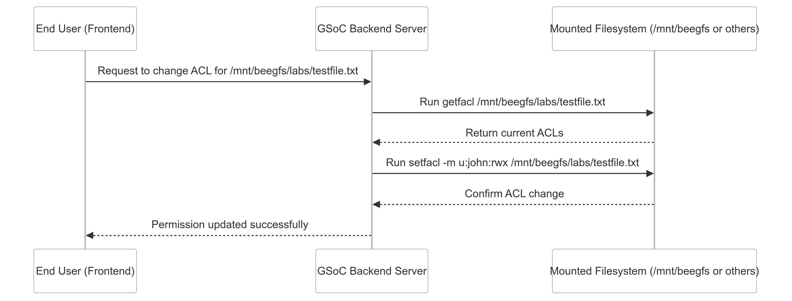
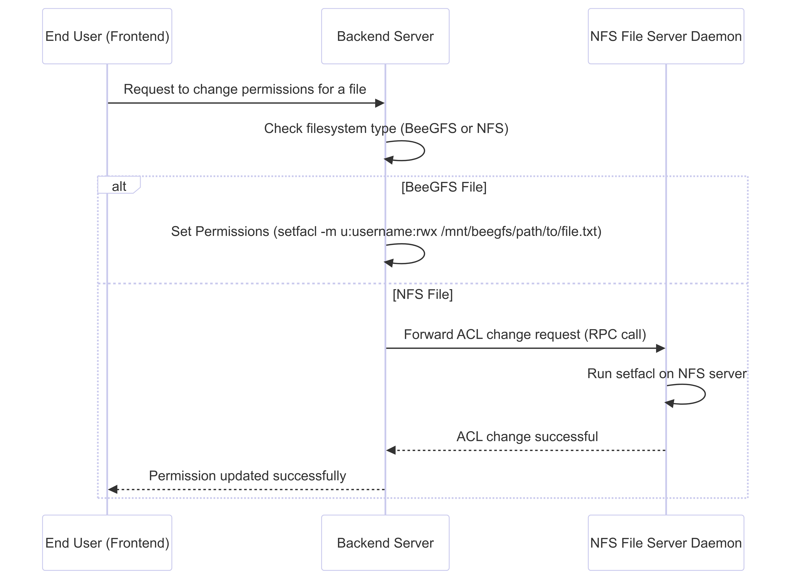
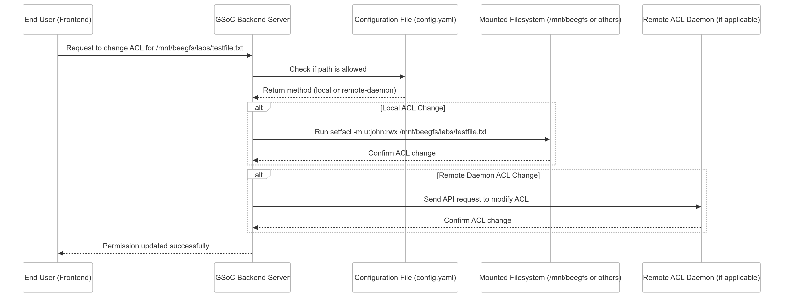

Progress Report for ACL Management GSoC Project¶
[9 February 2025]¶
The conversation was initiated with Mahmoud Zeydabadinezhad on an Email thread introducing myself and providng compherensive detials about me. This includes all my Social handles relevant to GSoC project, motivation, and a CV for detailed informatiom about my work.
On the same day, Mahmoud responded with an offer to have a quick call after some discussion about the relevant project.
I asked about selecting projects given my the organization and Mahmoud suggested me with Project #1 (Securing Linux Storage with ACLs: An Open-Source Web Management Interface for Enhanced Data Protection).
[10 February 2025]¶
I started researching about the topic and proposed my first designs to Mahmoud. I had primarly 3 questions:
I created this diagram to visualize what I think current researchers use in their network storage. Is this something that you are expecting? 
As much as I understand, the permissions and access provisions on a high level look like this:  Am I right in this case, or are there some additional components to these?
If I consider the above designs to be true, this is the top-level system design I am imagining:  Is this something you would consider to be in the right direction? (the primary storage server is actually)
Mahmoud invited me for a Zoom call on Tuesday. We had a successful first meeting and I got introducted to the GSoC organization.
[12 February 2025]¶
Comments from Robert Tweedy arrived on the proposed designs. Here are the comments by Robert Tweedy:
This architecture seems like a reasonable layout; it’s not specifically what BMI has (in our case nearly all of our access would be through what’s listed as “Remote Access” on that diagram, & we don’t have an on-site backup server; we also have some separate storage systems too which aren’t directly connected to the main “central” storage & we weren’t concerned about these for the purposes of this project as they’re not intended for mass-user sharing of data) but is a reasonable architecture to work from and a good testing architecture for the project’s application (which shouldn’t care too much about the actual network architecture - it’s the access to the underlying filesystem with the data that matters, & it can be assumed the server the application’s running on will have access to it).
This is an ideal way to organize a project directory & looks fine from a purely high-level overview, however it shouldn’t be assumed the underlying file organization will match this structure in a real-world scenario where a lab’s been around for a long time & might have different/various ways of (dis)organization of their data. The ability of the application to support applying a solution to the following type of request is necessary (as we certainly see this in BMI a lot & presumably other institutions that would benefit from this GSoC project face similar situations in data management): “Hello IT team, this is Dr. Bob from Boblab. I need you to grant Alice (a student in Charleslab) read-only access to this specific directory in my lab space: ‘/labs/boblab/data_directory_only_boblab_POSIX_group_has_rx_access_to/another_directory/dataForProject/’ and read/write access to this different directory: ‘/labs/boblab/output_directory_only_boblab_POSIX_group_has_w_access_to/another_directory/resultsFromCharleslab/’, without changing anyone else’s access to these directories & without giving Alice access to directories other than those I listed (and no ability to list the contents of parent directories she has to traverse through to get here); I should also be able to read/write/delete any data Alice uses/creates in these directories because it’s my lab space & we can’t put it into our institution’s shared collaboratory space ‘/labs/collab/’ because <insert_reason_here>. Oh, and Dr. Charles and his Post-doc Danielle should have access to these locations too but have read-write access to everything since they’ll be adding data to my ‘dataForProject’ directory from a collaborator”.
End-users may not have direct SSH/SFTP access to the underlying storage server nor the ability to establish NFS/SMB mounts depending on security architecture from the IT team & might only be able to interact with the storage through an IT-managed mountpoint on a computational server/node (this is definitely the case in BMI; all access to our /labs volume is done by interacting with the IT-managed mountpoints on the systems, mounted either as NFS or via the BeeGFS client we’re using). The ACL Management Application box on the diagram looks fine to me, as long as the “ACL Service” is in fact applying the ACLs to the underlying filesystem & can tolerate changes if made outside of the application directly on the storage servers (likely by the IT team).
[13 February 2025]¶
An updated architecture was proposed:

Here is my response with the attached email:
Clearing out the network architecture would be very helpful in defining the lower-level requirements and designing it.
I am currently designing the file structure according to the requirements, and so far, I am very happy to say that it’s going smoothly. I have come up with a solution but am focusing on optimizing it further to the lowest Linux levels to provide optimal performance. I will let you know soon. I am super excited to take feedback on that one.
Here are some of my thought processes for your reference:
Due to the project’s background, More focus must be given to the security portion, and features must be selected carefully.
The project must be highly configurable since it will be used beyond BMI. So, I am thinking of making the configuration as replicable as possible to make it easy for similar architectures to adapt. Since most of this work is done by IT teams, YAML-based configurations make a lot of sense to me.
I would focus on keeping the backend and frontends loosely coupled and developing developer documentation for easily building custom frontends for other users. This loose coupling would allow the development of Android and iOS apps in the future (it’s good to be future-proof in this project). As per my experience, developer docs help a lot. The front end that we will be building will be the default one.
The deployment should be simple and highly configurable, making use of tools like Docker to create images of updated versions for different architectures (actually, it might happen that we might use Kubernetes in the future designs, in which case Dockerization would help use a lot).
Apart from this, I want to ask: Can we use Golang for the backend and writing daemons? The selection of Golang is due to its simplicity, performance, concurrency model, powerful, well-maintained standard libraries (by Google themselves), ease of deployment and distribution, etc. It’s specifically built for servers; honestly, I can write a whole proposal on why Golang can be a good choice for this project. Although Go has huge accessibility to lower-level features we need, in case we are somewhere limited, I would use C or Rust as per the requirements.
On the same day, a meeting was scheduled where I, Mahmound and Robert discussed about the project in detail.
[18 February 2025]¶
The meeting was held on this day and 3 of us got together in a meeting for the first time and discussed in-depth about the project architecture. I presented slides containing my proposal of solution and sent an email with the updated slides.
Link to the slides: Download the PDF
After this meeting, a lot of emails where exchanged. Each response given by me was based on research done on previous emails by Robert. I considered it to be best if I added email contents here since they contain everything I came upto during the discussion phase. During this time, mentors suggested me not to rush with writing ode and first finalize all the requirements, which I did through these conversations.
[22 February 2025]¶
Robert Tweedy provided with the follow feedbacks after reviewing the slides:
Regarding “Proposed System Design for 1st Approach” (slide 6): There’s a mention of using Hash Tables for tracking changes to the underlying filesystem to notify the application’s backend & frontend processes as part of a responsive change-detection mechanism. I’d highly recommend weighing the benefits of setting this up (& the additional storage required to store said hash tables) vs. just having the application read the current state of the filesystem when it loads the particular branch of the directory tree it’s currently working with. Our storage volume is ~3.1PB in size (with many thousands/millions of small files in some directory tree branches) and the separate storage of entire filesystem state in a Hash Table could take up multiple Gigabytes (not to mention the very long initial scan of the filesystem to initialize this hash table). Please let me know if I’ve misunderstood the intention here.
Using Golang for the backend/APIs/daemons/etc. is acceptable, along with Python as needed. Using “C” for lower level operations should be fine as well, but it’s also perfectly acceptable to have the application make a call to the getfacl and setfacl commands in the background as needed rather than trying to mess with super low-level filesystem APIs. Javascript for the frontend development is acceptable, and any major JS libraries (jQuery, React.js, Angular, etc.) can be used as well as long as they can be packaged with the application (ie. no calls to external CDNs to load Jquery; it needs to be self-hosted within the application itself).
[23 February 2025]¶
I responded to the above email with the following respose:
I think proceeding with the second approach would be preferable. It nearly fits with the current implementation and would be more productive.
In answering the first question, I would need to weigh the comparison between the hashes approach and reading the current state while working on the lower-level system design. I understand the constraints now about our massive amount of storage, and I will address it in the next deck. One of my ideas for this purpose is Event-Driven Architecture, where all the changes would be pushed into the messaging queue for the backend to read and note. Here, RabbitMQ or Apache Kafka can be used. Let me know what you think about this.
For the second point, I will surely keep those things in mind. I will ensure that we avoid the lower levels of the file system API as much as possible. Also, since the front end will be shipped with the application, I will ensure that we don’t use CDNs.
In summary, I will develop an updated mid-level combined with a lower-level system design now and send the deck, and then I can start writing the code.
[26 February 2025]¶
Robert had the following comments on my response:
Regarding all of the details about the hash tables vs. Event-Driven Architecture, I can see benefit for having EDA set up monitoring the status of requests made by an end user (lets say a user submits a cascading permissions change request that will take hours to complete due to the number of files that need to be changed; this would allow for the application to provide some sort of status/progress update regarding the request until it completes), but I’m not sure that it should be used as an attempt to see all changes taking place on the filesystem in general since these could occur in large quantities for multiple reasons (computational jobs on the research cluster creating new files and immediately adjusting permissions as part of the job’s process, for example) and would be very costly to track vs. just reading the current state as-is when a query about a directory/file is made through the application.
If you do feel that including EDA is still worthwhile for the project, then either RabbitMQ or Apache Kafka sound fine to me & you’re free to use whichever one you’d prefer to work with.
[27 February 2025]¶
Here is my response to Robert’s comments:
I have realized that I need to do some calculations from my side. The reflection through reading the current state would work fine and be simple enough, but it depends on the volume size. If we have a million files with us, then reading the whole state after a change is challenging and time-consuming. Even if we manage to update the user only with the updates, it would be hard if the user has access to a lot of files and a big permission change has been made.
I liked the concept of giving a status update to the user if there is a big update from their side. It would definitely improve the user experience and can be done with EDAs. RabbitMQ would be preferable since it’s lightweight and simpler in design than the more heavy, advanced capabilities of Kafka, which we would not need.
One mechanism I am currently working on is mirroring the file structure and permissions into a memory-based cache like Redis. Here, all the changes made on the primary file servers would be reflected in the permissions and structures. I am aware of the drawbacks: more storage is required for this, but since it has a very high write and read speed, the user can access the structure faster. (In case the user is reloading repeatedly, it must not put load on the file server.)
More precisely, when the user triggers a huge permission change affecting 10,000 files, the file server updates it, provides status through EDA, and serves the user. Once the big change is made, the file server updates Redis through notification, and the user dashboard updates with Redis content. Now, the user can log in and reload any amount of time; the file server is not affected.
I am currently working extensively on these calculations since we will not be able to make many changes in the advanced stages of the project.
[1 March 2025]¶
Robert’s response on my last email:
By “If we have a million files with us, then reading the whole state after a change is challenging and time-consuming” are you referring to reading the state of the entire filesystem, only the directories/files that were updated during that particular transaction, or just the active working directory currently being viewed by the end-user in the application (regardless of whether there were changes in its subdirectories being performed as part of the latest transaction)? I personally think that if a user gets so many files into a single directory (no subdirectories) that it’s causing an issue for the underlying filesystem to read the state of that directory then it’s a data-management/organization issue on the end-user’s side of things & they should interpret the overall slowness as a reason to better organize their data for faster performance (which is out of scope for this GSoC application to rectify).
Additionally, while it is definitely important to make sure that the application makes only reasonable calls to the underlying research filesystem for information when needed so that it doesn’t bog it down with unnecessary requests, it shouldn’t be left to the application to always assume that it must handle its own filesystem state caching process as opposed to just making requests from the filesystem directly when necessary. In our particular case, our underlying storage system is already making use of dedicated metadata servers so that the actual data storage node is only being accessed when the research data itself needs to be retrieved/written; running commands like ls,chmod,getfacl,etc. are fine & usually do not take that much time to complete for simple non-recursive lookups (though they can take at least a few hours if working recursively to apply changes on a large set of data, like if a researcher decides to recursively make a change to their entire /labs/mylab/ directory, but this is anticipated due to the sheer quantity of changes that would need to be made), and it would be acceptable to us to just have the application perform direct queries from the filesystem using standard APIs or commands like ls and getfacl since we have already tuned our underlying storage infrastructure to handle this at reasonable speeds in most circumstances; the GSoC application doesn’t need to be aware of our metadata servers specifically, because any interaction with the filesystem that requires their use is transparently passed along to the metadata servers when needed.
This may be one of the parts of the overall application that you’d consider modularizing, having modules available that could interact with the managed filesystem in different ways (ie. a module that just does direct access via common filesystem commands/APIs as previously mentioned, another module that can perform the type of filesystem tree caching/internal tracking as you’ve proposed and mentioned you are looking into, and any future modules that might be written by other institutions to better integrate with their specific set-ups) but provides a standardized API that is used by the application so that deployment sites can select the module that best fits their needs. Some sites may have smaller sets of standalone file servers where having the GSoC application store metadata makes sense & would be beneficial to reduce strain on their systems, while others like us already have this resolved in our general storage system structure & would prefer to not need to dedicate additional storage just for the app’s own internal cache.
[3 March 2025]¶
My response on Robert’s comments:
Okay, all the above instructions and requirements are clear to me. It seems reasonable, and the Redis idea can be added as a module and developed in later stages.
As Robert sent in the last emails, I have reviewed the current BMI architecture in detail. The big question is: How much is BMI’s current implementation willing to change?
I know that the fewer the changes, the better the would be for installation on BMI infrastructure, so I want to make sure I work hand in hand with the current implementation.
Currently, we have an OOD web GUI hosting server and computational job nodes physically connected to storage clusters. We also have LDAP for authentication and management. Since I was told about the current functionality, I can visualize how the configurations may look at a high level.
I am planning to replace the current OOD server with our backend server, which will serve the GSoC Project frontend to the user, provide computing access/permissions, schedule jobs for the computational nodes, and more.
We would consider computational nodes and storage clusters hidden and packaged together like a single interface. The storage operations can be performed with Slurm Jobs in the computational nodes, which would be an abstraction.
Now, we need a mechanism for the access controls that can handle millions of file permissions and 100s of users with fast read and write performance. For this, I am thinking about using LDAP and PostgreSQL in parallel. I want to give a scenario here:
Think we have Bob as a user. Bob is an intern working with Alice (senior project manager). Alice has access to /lab/alice/biomechanics/confidential/secret.txt, and Bob has his own /lab/bob directory. Suppose Bob is provided access to /lab/alice/biomechanics/confidential/secret.txt. The mechanism I am considering looks like this: First check if Bob has access to /lab: No. Then check if Bob has access to /lab/alice: No. Go on and on; Bob has no access to /lab/alice/biomechanics/confidential. Finally, check for /lab/alice/biomechanics/confidential/secret.txt, and yes! Bob has the access, and he can work with it.
Now, this algorithm allows us for nested permissions: if Bob beforehand had access to /lab/alice/biomechanics, then he must have access to /lab/alice/biomechanics/confidential/secret.txt and can continue with even reaching check for /lab/alice/biomechanics/confidential/secret.txt
As per my analysis and comparison with PostgreSQL, LDAP has merits and demerits. It boils down to the performance, so we will use LDAP for higher-level permissions like directories/lab/alice/biomechanics|r (so it has read permission). Hence, if /lab/alice/biomechanics has 100K files, we don’t care; Bob will have access to each of them (all the access requests would be pushed to computational nodes for processing). But for fine-grained permissions like /lab/alice/biomechanics/confidential/secret.txt, we would check PostgreSQL since there might be 10K of such files in them and PostgreSQL is good for this (additionally, Redis can be used here to cache frequently access files for faster performance).
So now the process becomes simple for LDAP to just check for directories and subdirectories: they would be sure less than the number of files by a huge number and will provide optimal performance here. Also, the updating process becomes simpler. If Bob has access to /lab/alice/biomechanics/confidential/secret.txt and has been told to give access to Aditya, the backend will verify the permission and then update the database.
LDAP would also be used to check various parameters, from basic stuff like whether the user exists to advanced roles like “Is the user allowed to provide his access to other users?”
Now, this architecture allows us to have centralized permission and ACL in one place, computational and storage jobs in one place (so we can name them two major packages). Frontend would also be one package (optional for big clients since they have standard APIs, but we would be building a default one) and create optional modules that other developers can build in the community, which would be plug-and-play.
I am not going into the details of the actions that computational nodes would take—they are pretty straightforward and just need designs and approvals.
Let me know what you think about this.
After this, I will provide a lower-level system design. Should I start writing the GSoC proposal, where I can propose the updated ideas one by one and adapt them to your requirements and instructions? This will allow me to write the proposal simultaneously, have a standard format for proposing updates rather than writing long emails, and version documents.
On the same day, I got response from Robert:
BMI’s current cluster infrastructure architecture will not change; what we would do is set up a new server (very likely a VM) for the GSoC application to run on & would expose the front-end via appropriate methods (likely via an existing reverse-proxy system) to make it accessible to end users (which could be a sub-url on an existing domain, so it’s important that the application supports running from a reverse-proxy address like “https://cluster.example.edu/datamanager/” or similar, since the base “https://cluster.example.edu/” page may be a landing page with links to various things like the job submission system, a help/documentation system, and now the permissions management system).
Attempting to have this GSoC data permissions management application also handle cluster job submissions is out of scope, as there are already applications for this (Slurm, SGE, PBS/Torque, Moab, etc. for the job queueing, and Open OnDemand for the job front-end interaction via GUI). It’s also not desirable for the application to require an underlying system like Slurm/Torque/etc. since there’s a possibility this application may be deployed at a smaller scale depending on an end-user’s needs (we’re planning a central deployment within our department, but a small independent team may have just a single server or two without full job scheduling systems & want to deploy this application directly on them to help manage their local filesystems - this should still be supported by the GSoC application).
If this application is using PostgreSQL/Redis/etc. for its own internal purposes (caching, state management, etc.) then that’s fine, however note that when deployed it will be adjacent to and not part of the data-access pipeline for the underlying filesystem; the computational nodes will access the filesystem & its data via standard existing methods, with the node/filesystem validating access permissions using the combination of standard POSIX & extended Linux ACLs applied to the directory path being accessed. They will not be making separate calls out to a PostgreSQL database to do a custom permissions lookup, as that would imply they’re accessing the filesystem/data via some sort of middleware layer that controls access to the filesystem & is performing those lookups.
If you want to start writing the GSoC proposal I think that’s fine, but I need to defer to Mahmoud to confirm as he has more familiarity with the GSoC program than I do & is more familiar with the overall GSoC process. I would definitely recommend making sure the scope of the project is understood before writing the final proposal, as from our recent emails I worry that there’s more potential for scope-creep with this project than had been anticipated & it could inadvertently lead to development time spent focused on things that are actually out of scope of the main goal.
[4 March 2025]¶
**My response on Robert’s Email: **
Okay, that clears it up: I don’t need to jump around computation nodes and consider it part of our product. Our users can have them if they want (and Emory has one), but it’s not a requirement in the project. The final question here is, are we going to make use of computational nodes when we deploy it inside the BMI network? I am unsure if I understand the use of computational nodes in your existing infrastructure, but I guess it’s for doing heavy computation tasks related to data operations. For example, a permission change of 1 Million files has been requested, so the computational nodes schedule the job, which updates the permissions in the data storage unit.
However, as mentioned, I would not consider keeping computational nodes as part of the GSoC project. Also, it’s clear to me that you need a monolith server (running as a VM) that can handle all operations. This approach works for me, and I will follow it.
What’s going around my mind is using goroutines to do processes that take a long time.
For the reverse proxy, Nginx would be sufficient.
The second question is, what does the LDAP server do in the current Emory infrastructure? If I knew its current use, I would be able to adapt it for this GSoC project.
If we use getfacl and setfacl, we will manage permissions on the storage servers themselves, which would create users on the servers. Since we have multiple storage servers, the design for managing permissions across all would differ from what we can do with databases like PostgreSQL.
To sum everything up till now, if we follow the getfacl and setfacl method, the design would look like this:
The backend server would do the job of serving the front end, exposing the standard interaction APIs, basic authentications like whether the user exists or not, etc., and communicating with the storage nodes.
The storage nodes would run a daemon that exposes follow endpoints: create-users, delete-users, get-acls, set-acls, etc. If a user needs to be created, it would be created on the server itself. Deleting would go the same way. Getting user permissions would use getfacl, and modifying users would use setfacl. We are going to have the owner of the directories, users, and groups in it/
The daemon responds to the backend server and is served to the front end.
After clearing this up, things like the process bar with EDA can be discussed.
If I am still getting out of scope, let me know the portions I should cut out completely.
Second Email:
Currently, I can imagine the LDAP being used just for basic authentication and user sign-in and sign-up. I went through different uses of LDAP (like file permissions), so I was wondering if BMI is using it that way. If it’s a basic user auth, then I would be using it as it is in the project.
[5 March 2025]¶
More questions from me:
After working through the day, I have circled back on this: How much computational power do we have, or does it even matter for the GSoC project?
The reason why I stuck around the computational nodes is due to edge cases where millions of files are updated at once. If we consider only the backend server and Linux storage servers to do so, then handling millions of file updates would be resource-intensive and time-consuming. Are we assuming they both are sufficient to carry out the process in the expected time?
If yes, I would consider a single master-slave architecture (backend as the master and storage nodes as slaves running daemons). All the lookups and updates will go through this pipeline (frontend -> backend -> daemon -> underlying storage).
Robert’s reponse on these questions:
For the GSoC project the computational power doesn’t necessarily matter & it’s safe to assume that the application’s back-end processes would be running on a sufficiently powered system, and it’s good to profile the application to get an understanding of what it spends time on when processing (to try and find ways to improve efficiency) but there’s no hard time-limits that we’re expecting to be met at the moment as long as the app is responsive to end-user input within a reasonable amount of time (completion of back-end tasks can take as long as needed & shouldn’t be blockers on the front-end if at all possible); currently I can dedicate a system with at least 8 cores & 64GB of RAM upon deployment here in BMI (other sites might deploy on lower-specced hardware, but overall this shouldn’t be a concern to the GSoC project as it should be generally understood by the end-user that there would be a performance impact depending on the resources available to the application).
The computational nodes are being used for research computational jobs & can frequently be occupied to the point that there are jobs pending in the queue that are waiting for resources to be available; as such, I’d advise against using an architecture for the GSoC application that expects to offload its processing to the nodes (but there’s nothing preventing this from being one of the application’s many back-end plugins available when the application grows as there may be another research team that is interested in using it like that; just don’t make it a focus during this initial development period).
Regarding LDAP: This is being used for basic authentication & user sign-in, along with identifying the Linux/POSIX groups that user accounts are members of, but nothing related to actual file permissions since this is a filesystem-level function. I’d advise not requiring that specific changes be made to the LDAP instance in order for this application to function (ie. no mandatory need to make user groups specific for the app’s functions to identify users) and instead leave it up to the IT teams deploying the app to configure things in a way that best suits their environment by providing options in the app to designate one or more (if appropriate) groups to use for things like granting additional admin privileges in the app.
The use of getfacl and setfacl don’t involve the creation of users on the servers, they work with the existing users already known to the servers (or UIDs if a user doesn’t exist; this type of situation can occur for one reason or another & should be something that the GSoC application can modify/support just in case). Since our servers are connected with our internal LDAP infrastructure, they know the details of all our users as well & there won’t be an issue.
[6 March 2025]¶

The upper diagram is the high-level system design and below is a transaction scheduler I am working on.
I took all your emails and compiled each requirement and constraints; and came up with this which fits closest to that list. Let me know what you think. I think this one is much closer to what you are looking for (since I understood the LDAP purpose and ACLs in Linux Servers in better detail).
The scheduler part is under design right now; but I would love your opinions on this. This design is aimed to improve consistency and resource utilization of the backend server.
So explain it a bit in here; as soon as the user logs in - they create a session in the backend which is responsible to handle everything the frontend has to do with (this makes our backend server stateful). Each session has its own queue of processes. Processes contain 1 transaction. Here, a transaction is a consistent operation which is true if the operation succeeds and false if it leaves midway (and reverts things back). When a user does some clicks on the frontend and attempts some operations; the frontend shows that they are scheduled (like the upload bar in google drive which uploads in the background and shows the process bar). The session appends the process in a queue. The first in process gets first out and is executed by the transaction executer. If a user quits midway (due to any reason; like an emergency power off on desktop); the backend keeps executing the process as it’s scheduled. It executes all of it and when the queue is empty; exits and the session is successfully closed.
Moving more advanced; if we have a local database that keeps a copy of the queue; it would provide more redundancy in case the backend application crashes midway or server goes offline. This will allow us to keep track of the queue and not end up messing up the permissions in these edge cases. I know that it will not be able to recover 100% but this small integration will improve the consistency drastically.
[7 March 2025]¶
Robert’s comments on latest architecture:
This latest diagram looks like it’s nearly there, but I do have the following comments about it:
The backend server shouldn’t be modifying the LDAP server (unless this is an optional plugin for future development, used by smaller-scale deployments that may not already have an existing LDAP infrastructure); it would only be binding to/reading from it so that it can recognize network users & groups (& other details that may be present in LDAP, as appropriate) but shouldn’t be making its own changes.
Your design may already handle this, but I wanted to make sure this was accounted for just in case - The daemon/API running on the file storage server should be capable of binding to a Unix socket too rather than explicitly requiring a TCP/IP socket (or, it should at least tolerate a localhost-only connection); there’s a possibility that some sites may want to deploy the GSoC backend on the same system as the storage server depending on the resources they have available & wouldn’t want to open multiple firewall ports (one for the backend server’s daemon & another one for the storage server daemon).
Regarding the example you fleshed out in the email: it might be a good idea to make the “revert changes if a transaction fails” functionality an option that the end-user can toggle (on, off, or on up to a certain limit of files/tasks & off above that limit) rather than always being enabled; some users may be fine with leaving a partial transaction completed as-is (since technically they could use the GSoC app to fix any issues/create a new request to complete the rest of the original transaction after fixing the underlying issue) due to the amount of time it would take for the changes to be reverted. There’s also the aspect of having to keep track of the original & changed state for each file while a transaction’s underway, which could be very memory/storage intensive for large transactions.
Other than those few observations, everything else you’ve mentioned in this latest email sounds good; the session scheduling mechanism definitely sounds like a good thing to have since it will allow users to not need to leave their systems actively open & watching a large transaction complete, and I’m glad you’re excited about working on that aspect of it since it’ll be of significant value to the overall GSoC application.
On the same day, I proposed the following idea:
Greetings of the day,
Okay, now I am only short of one thing here: understanding the LDAP server’s purpose. I understand that it stores basic user and group data that Emory already has and is used for basic authentication and checks.
My understanding is that the setfacl and getfacl commands would use the LDAP server to manage users and groups since they are not created on the Linux File Storage Servers. Please correct me if I am wrong.
Are we allowing the creation of new users or new groups from the front end?
I am imagining a scenario here. A new user can visit https://gsoc-app.emory.edu/signup and create a new account. This info will go on the LDAP server, and the new user will be allocated no privileges to access any files. This user now goes to work with Prof. X. Prof. X has access to lab/MRI-scan data, which he wants the new user to access. He can then give permission to the new user from his logged-in portal.
This allows new users to create an account on the app with no privileges; others with their own files and permissions can assign the user their permission. So there is no security issue or unauthorized access due to the least privilege but the ability to create new user accounts. As far as I can understand, this information would be stored on the LDAP server.
Also, users would be allowed to change their passwords, delete accounts, forget passwords, etc., on their own, and there would be no need to contact the IT team for these operations.
If we do not allow user creation, we are assuming that we are not creating new accounts and are only managing existing users listed on the LDAP server. In this case, the IT team would be responsible for adding new users, changing account passwords, deleting users, etc.
Let me know about this, as it will clear up the authentication part, and we will almost reach a consensus.
Regarding daemon connectivity, it sounds good, and I will design the daemon to handle Unix Sockets. I agree that a few sites would consider deploying everything in the same server (Linux File Storage Server) and I would make sure we make provisions for that. In this case, I would call it a monolith deployment where a single server does everything - frontend handling, backend operations, authentication, and storage services. When a site has an infrastructure pictured in the last email’s diagram, it can be called an orchestrated deployment where multiple Linux Storage Servers are orchestrated simultaneously. We can provide docs for both kinds of deployment.
Returning to the process queue and transaction mechanism, I am glad you liked it. I completely agree that the transaction rollback feature can be kept optional since it would require an additional database running with the backend server. Three options seem fine: ON (where when a transaction takes place, during the execution time, it’s logged and mirrored in the database no matter how big it is), OFF (where there is no transaction process state saved and would be prone to partial transactions if something wrong happens) and Partial (where a limit would be set on how big a transaction can be eligible for rollback and beyond that if a user initiates a transaction, they would be prompted with the warning of no rollback before confirming).
This log can be either deleted after the end of the transaction or stored in the database if configured to be. In the prior case, this will allow us to revert back if the transactions fail in the execution period and be true only if the full operation is completed. In the later ones, a transaction can be reverted back anytime (like git). Again, limits can be implemented here (in case we need to skip big transactions).
Let me know what you think. After the LDAP part is clear, I would like to finalize the design and then work on the lower levels of software implementation, which I would use in the GSoC proposal to sum it up.
[8 March 2025]¶
Robert’s comments on my reponse:
I highly recommend that you check the Manual pages for the setfacl & getfacl commands to get an understanding of what they do, as they only manage extended file permissions & aren’t user-management commands; an online version of them is available here, but it should also be available from any Linux system with the appropriate acl package installed via the man command (the package name differs depending on distribution): https://linux.die.net/man/1/setfacl https://linux.die.net/man/1/getfacl
As far as we’re concerned in our department here at Emory, we will not allow user creation through this GSoC application; other deployment sites might have a use for this so it could certainly be a plugin for the application, but I’d rank this as low priority for now & shouldn’t be focused on if there’s other tasks to still complete for the application’s main development.
Our LDAP server is just used for centralized management of user accounts instead of using local-only files like /etc/[passwd|shadow|group]; worrying about its specifics is out of scope for the GSoC project. All the GSoC project needs to be concerned with is that: LDAP exists & that it’s able to query the LDAP server given the appropriate info provided by the administrator setting up the application (LDAP server address(es), bind user/dn, bind password, base search DN, object filter, attribute mapping, etc.) to validate whether a user account exists & is authorized to log in to the application. The underlying servers (backend/frontend/storage servers/other servers on the network that are outside of the scope of this project) are already configured to use the central LDAP servers to look-up user names/account UIDs/group membership/etc. and match them together for system-level purposes, so the GSoC application does not need to worry about this. Put another way, all the accounts in LDAP “exist” on all the servers, so a command like id aditya or getent passwd account_uid could be run on any server & would return the same result regardless of the server it was executed on, even though the account doesn’t exist in the server’s /etc/passwd file.
There should be pre-existing open-source projects that can provide the basic features of this functionality within the GSoC application, so I’d recommend just reviewing those & selecting the one that you feel is the best fit for inclusion with the application (make sure to review their OSS licenses & ensure that they’re compatible with the ones required as part of the GSoC!) rather than trying to code an LDAP client implementation from scratch.
[9 March 2025]¶
My updated design:
I went through the getfacl and setfacl docs, went around and tested it on my Arch Linux system, and read about it in depth.
Based upon that, I have modified my system design as shown below:

There are no provisions for updating anything on the LDAP server for the backend (unless we build a plugin for the GSoC application for this purpose, which I am leaving as a low-priority task, as mentioned). It’s clear to me now that the LDAP server should be used in BMI’s network, and I will make sure the GSoC application doesn’t disturb it. This will also be explained in detail in the documents.
Let me know if there are any more improvements; I will add them, too. After this, I would be working on designing the lower levels and testing them out by starting to write code, so let me know about this, too.
Also, since our backend is written in Golang, we can use https://github.com/go-ldap/ldap (MIT Licensed) for LDAP integration. I will also be testing it out soon.
In addition, I have been working on deciding the interaction protocol between the daemon and the backend server. gRPC catches my attention for remote connections since our endpoints will be well-defined. As mentioned, Unix domain sockets seem to be ideal for local connections.
After this point, I started working on my GSoC Proposal and interacted with my mentors for feedbacks and updated it as per their recommendations.
[10 March 2025]¶
On this day, I started working on the prototype project and made my first commit.
[21 March 2025]¶
I continued with my questions which came during proposal writing and prototyping:
Sure, no worries. I am writing a new chapter in the proposal for the prototype, which I am working on. The good news is that the proposed session management algorithm is working well, and we can proceed. GSoC proposal submission starts tomorrow and ends on 8 April, so I would like to work more on the proposal and the prototype and get your feedback before submitting it.
Also, I have one more question: We have multiple Linux File Storage Servers in orchestrated deployments. All those different servers have filesystems where users have permission and access assigned. Should the portal show the user that all the files are in the same server space and hide the orchestration (like virtual machines), or should I provide options about which server to store the file in?
In the prior case, when users open the portal and log in, they would see the files and directories listed (no matter which server they are from). When they do to /test-result and say it was in server-3, the backend would automatically move to the server-3 /test-result content and list it. The session-management module would store all this information.
In the latter case, the user would select a server like “server-1”, “server-2”, “server-3”, etc., and then the backend would only list those files and work with that server.
This is important to me since I am now starting to build the prototype of the transaction executor and will be connecting it to the session management module I have built.
I am looking forward to progressing on the prototype while finalizing the proposal. Even after the submission, I can keep working on it since the modules in the final project will take some of these prototype components and build upon them. It would speed up the final project and allow me to work on more features.
Robert’s response:
In the case where there’s multiple different servers in an orchestrated deployment serving their own unique filesystem, it’s possible that all of their filesystems may be mounted on the backend server such that they’re accessible simply by navigating to a specific directory (ie. /mnt/server-1, /mnt/server-2, etc.) and I would hope that the end-user administrator deploying the software would configure it to match how their users expect to see the filesystems on their network. As such, I don’t think any special options need to be added to the application to explicitly choose a server, as this should be implicit based on the path of the file that the user’s navigating to.
I do see where this may be of use for a site that’s aiming to have a single deployment of this software which supports multiple different departments at once as opposed to each individual department having their own deployment, but I wouldn’t worry about that too much for this initial phase & it can always be a future improvement that’s made if needed.
[22 March 2025]¶
I started a new thread as per Mahmoud’s instructions and started with the following question:
Initially, I thought I would retrieve the files and data through the daemons themselves through a network connection (precisely, through gRPC calls). Although the last email by Robert mentions that there would be mounted filesystems from the Linux File Storage Servers like /mnt/server-1, /mnt/server-2, etc. Since this is something we expect the user to set up and is out of the scope of the application, I will specify this in the documentation of the project.
Coming back to the displaying of the file system, since we would be using locally mounted volumes of those Linux File Storage Servers, I would list all of the files recursively in /mnt/server-1, /mnt/server-2, etc. (this would be configured by the user in config.YAML file for us). The user will see all the content listed on the portal and can navigate to any file.
For example, /mnt/server-1 has test-1/ test-2/ and test-3/ directories, and /mnt/server-2 has test-4/ test-5/ and test-6/. The user will see:
test-1/ test-2/ test-3/ test-4/ test-5/ test-6/
listed on the front-end. If they select test-4/, the backend session would automatically consider it to be in /mnt/server-2 and list the contents to the user. This will abstract the /mnt file system from the users. Abstracting files /mnt that exists in backend servers also allow us to cease access to /mnt as whole from the user to lay the base for preventing Unauthorized Access Attacks, like user’s using the APIs from the fronted to list files with directory path: “../../root/*” and listing files.
More questions by me:
I also have one more question that came to me while I was writing the code for the file interaction handlers in the prototype: What file operations are users allowed to perform? Currently, I am thinking about 4: Get File, Upload File, DeleteFile, and UpdateFile. Does that sound good, or do we need more? also, are we providing a feature in the frontend to edit some files (like text files) on the frontend itself with an inbuilt text editor? in that case, the update file would do the updates with a .diff file send to the backend to patch the old files - where the mechanism will look like git.
I had questions about the proposal:
Here is the updated proposal for the project. It has been updated until yesterday’s work on the prototype repository.
Since the prototype codebase is growing daily, it’s hard for me to keep track of everything in the proposal, which will eventually slow down the process. So, I need a point to finalize the proposal and submit it on the GSoC portal before 8 April (the final day of submission).
The prototype would be worked on even after the proposal submission, and I would work on getting the components ready for the final project to speed up the development during the official project (which means more time for those extra features during the GSoC period).
On the same day, Mahmoud instructed to get started with documenting the process and thus, this site was deployed with Sphinx Docs:
From an administrative perspective, daily updates to your project proposal are not required. However, I strongly recommend maintaining continuous communication regarding any modifications or developments to the codebase. Please notify us promptly whenever changes are implemented, as this will enable Robert to provide timely feedback and ensure alignment with project objectives prior to potential deviations.
You should send us your finalized proposal by April 5th to allow sufficient time for review before final submission.
Documentation Notice: Thorough documentation (this is separate from the proposal) carries equal priority to functional code. I advise implementing the following protocol:
Maintain daily documentation of all development activities and code changes (Would also be nice to include your mistakes and lessons learned for other students)
While routine sharing is unnecessary, full documentation must be submitted to me directly prior to each evaluation milestone.
Please note that Robert will conduct separate technical evaluations of the codebase. This documentation will serve as critical supporting material during assessments.
Upon this email, I started building the docs for changelogs and kept working on the prototype and proposal
[24 March 2025]¶
Robert’s response on my earlier queires about CRUD operations:
Sorry for the delay in my response; I want to quickly circle back to a question you had earlier in this email thread:
I also have one more question that came to me while I was writing the code for the file interaction handlers in the prototype: What file operations are users allowed to perform? Currently, I am thinking about 4: Get File, Upload File, DeleteFile, and UpdateFile. Does that sound good, or do we need more? also, are we providing a feature in the frontend to edit some files (like text files) on the frontend itself with an inbuilt text editor? in that case, the update file would do the updates with a .diff file send to the backend to patch the old files - where the mechanism will look like git.
For the base aspects of this project, direct file operations to view/edit/modify the file’s contents (including uploading files & deleting files) rather than the ACL permissions metadata are out of scope but can certainly be available either as a plug-in or built-in but with a toggle to enable/disable these features in the application; at this time I’d prefer to not allow for file uploads/downloads through the application when deployed in our infrastructure (we have a dedicated file transfer system to alleviate congestion on the standard network links, & I’d not planned to deploy the GSoC app on this as the backend server) but it’s always a future possibility so having the option to enable/disable those features would be nice.
The cleared a lot for me and I started to focus on ACL rather than CRUD at this stage:
That clears a lot, Robert. I would like to keep the CRUD operations as a built-in feature but disable them by default. I will work on this after the base implementation of ACL management is completed.
To sum up, we need an ACL system rather than a file management system for the base project. I will just remove the /mnt part since we needed it for CRUD operations only, and permissions are completely managed by the daemons.
At this point, I was working on session management code and had following concerns about the working directory:
Robert, I have a question. If I don’t consider mnt/ now and have “n” number of file servers running file server daemons, how would the user select which server to fetch and navigate files to? How should I list the files in this case (now we are rolling back to the question I had earlier in the other thread where I asked about listing servers (the email where I your response had mnt/ mentioned)).
So for example, I have this structure defined:
type Session struct { Username string CurrentWorkingDir string Expiry time.Time Timer *time.Timer TransactionQueue *list.List Mutex sync.Mutex }
I call this a session. So CurrentWorkingDir contains the directory of the user (also the page the user will see on the frontend with the files listed). Now, since I have an “n” number of servers with names like “server-n,” should I list the servers and then start with following the CurrentWorkingDir (as configured, for example, /lib/)? or is there any other way?
According to this structure, when the user calls the GET /list-files, the “ls” equivalent of the function is run on the Session.CurrentWorkingDir and content are returned to the backend (and then to frontend for listing).
In the earlier assumption of /mnt and doing CRUD, I used to initialize /mnt/ (as configured in backend.yaml) as default and then when user would call , would call GET /list-files, contents of /mnt/ would be listed i.e. server-1/ server-2/ … etc.
[25 March 2025]¶
Robert’s response on my questions:
I’d recommend going ahead and keeping the previous functionality where it can access /mnt (or any other base directory as specified by the system administrator) even if the other aspects like file-content manipulation isn’t taking place/enabled within the application.
Essentially, consider that the following scenario will be present on the server running the GSoC application’s backend process: the system administrator will have a parent directory (ie. /mnt or similar, like /labs) where all the filesystems/file servers being managed by the instance of the GSoC application are mounted and accessible to present the view of it all being a single filesystem tree, which should mirror how the filesystems are seen on the computational nodes (and other systems) within the network so the end-user should already be familiar with it. If they know that the file they’re trying to set permissions on is at /labs/alab/mystuff/file.txt, then it doesn’t matter which physical server it’s on because they’d just be accessing it via that common path structure.
Here, a turning point discussion started related to /mnt and different filesystems:
So this means that /mnt should be present whether CRUD is enabled or not. The /mnt would have /server-1, /server-2, etc., which are mounted, and each of them has our daemon ready. The structure of files inside /server-1, /server-2, etc. will just be used for getting the file tree and listing those files on the frontend portal. When the user selects a file and attempts to update the permissions, it goes through the backend server and into the daemon. The daemon updates the permissions and is done.
But I have a few concerns and thoughts: if a user wants to use only to deploy this with ACL management and not CRUD operations, mounting the volume of Linux File Servers would be a lot of work. If they had a lot of rules in their internal network, it would have been more challenging for them. Also, mounting would be overkill since they are only concerned about ACL. If the user needs CRUD enabled, then I can understand we can expect users to go through the mounting process.
What I am thinking is that the daemon can list files and modify permissions, and the user wouldn’t need to set up /mnt. Users can select server-1, server-2, etc., and then choose one and list its files and directories.
Also, if we need to mask the server names, we can list them in this way:
content of server-1 content of server-2 … etc.
for example, server-1 has /lab which contains test-1.txt, test-2.txt, test-3.txt, etc. and server-2 has /lab which contains test-4.txt, test-5.txt, test-6.txt, etc. So users on the frontend would see:
/lab/test-1.txt /lab/test-2.txt /lab/test-3.txt /lab/test-4.txt /lab/test-5.txt /lab/test-6.txt
All are listed one by one, and users can select any of them. This list of files would be fetched from the daemons with no /mnt required. In the case of CRUD being enabled, the download button will request the backend to get the file, which the backend will fetch from /mnt. So, we can mention this in the documentation.
Robert addressed my concerns:
I think the source of confusion might be that we both have slightly different ideas about the underlying storage filesystem’s layout, and I’ve been approaching this from the perspective of BMI: while we have multiple storage servers, the end users don’t need to know/care about this because the filesystem’s already acting as an abstraction layer & users just see a file at /lab/test1.txt, without needing to know that particular file resides on server Storage1.bmi.emory.edu while /lab/test2.txt resides on server Storage2.bmi.emory.edu. In short, it’s many file servers but only one file system. I can definitely see where institutions that have multiple servers each with their own unique filesystem might need a way to distinguish between servers in the GSoC application, so I leave it to you to determine how you’d like to manage this in the application; I have no particular preference as long as it’s intuitive to the end-user.
If the daemon can list files and modify permissions, I would presume that it too has access to the filesystem which is why I’d mentioned having /mnt present on the backend server even if not doing CRUD operations.
At this point, I studied the BMI’s infrastructure once again and circled BeeGFS:
So I thought about this for a while, and I am the following interpretation: The BMI’s network is running BeeGFS, so we have a unified filesystem which is managing all the data. /lab/text1.txt and /lab/text2.txt can be on any server (server-1 or server-2) and is completely abstracted from the user. Now I will consider that the backend server has /mnt/file-system mounted from which I can access all the data. I will still see /mnt/file-system/lab/text1.txt and /mnt/file-system/lab/text2.txt in them. The users will also see it in this way. But now Prof. X want to change the permissions for /mnt/file-system/lab/text1.txt so they interact with the frontend to initiate the changes, which goes to the backend, which resolves the place where /mnt/file-system/lab/text1.txt resides on physical servers and contacts it’s daemons to modify the file permissions.
[26 March 2025]¶
At this point of time, the discussion about various filesystems was started. I considered BeeGFS to be the point of interest at this point. I did extensive research on BeeGFS and it’s structure. Robert had following comments:
This looks very close, and I believe we’re thinking along the same path but just want to make sure; the below workflow is what I know would be needed for BMI’s storage network, assuming all the separate modular daemons discussed previously are incorporated into the application design: Prof. X wants to change permissions on /labs/xlab/project1.txt Prof. X accesses frontend to initiate changes. Frontend sends request to backend orchestration/management daemon. Backend daemon sends the request to the ACL modification daemon. Server running ACL modification daemon has access to /labs/xlab/project1.txt mounted path. ACL modification daemons apply requested changes & return result to backend daemon. Backend daemon reports request status to fronend for display to end-user.
I’d not considered it relevant at the time since this project shouldn’t depend on the underlying filesystem, but I’m now realizing that it may be important to mention to aid in understanding BMI’s structure: due to our use of BeeGFS for the top-level filesystem accessed by our systems, we can’t just modify data directly on the physical storage server that it resides on; it must be accessed through the BeeGFS client (or a NFS share that’s just sharing out a mountpoint from the BeeGFS client, in cases where it’s not desirable to install the full client on the system) so that the overall filesystem structure is intact. While there are ways to identify the specific server a file’s on in cases of low-level troubleshooting, it’s not necessary in normal circumstances & definitely dangerous to modify the file outside of the virtual mountpoint presented by the BeeGFS client; for example, the file “/labs/project1.txt” may physically exist on the server “Storage2” at the following path (which I should mention does not contain any file metadata; BeeGFS stores that on a separate metadata server with an equally obtuse path): /zfspools/tank10/beegfs_storage/chunks/u3DBB8A4E/67C5/C/2F3-67C5C821-2/68-67C5D14C-2
In short, all filesystem access/modification will eventually be performed through the mounted BeeGFS filesystem, so from the perspective of the server running the ACL modification daemon this filesystem will need to be mounted & available for changes to take place.
**So I went deeper into BeeGFS and starting building the testbench around it in a docker environment for testing purposes. So I had the following follow ups for the last email: **
I did some research on BeeGFS structure and how our GSoC application could be made compatible with it. I am listing my interpretations here and some of my takes:
First is the front-end listing of the files. The backend server would have /mnt/beegfs, which is connected to the whole BeeGFS file system (as a client) and can list all the files from it.
The users see files via our front-end portal and select the file path from it, such as project3/fileC.txt.
The data: project3/fileC.txt arrives at the backend. The backend will query the BeeGFS metadata server about /mnt/beegfs/project3/fileC.txt (i.e. prepended “/mnt/beegfs” to the file path) to find which server has this file. The metadata server returns server-2.
So we contact the server-2 daemon and ask it to change the permissions for /mnt/beegfs/project3/fileC.txt, which it can do. Since it’s going via the mount path, BeeGFS shouldn’t have any issues with it; it will just have a successful file permission change.
Here is the visual representation of the algorithm:

I am writing a test bench for simulating BeeGFS on docker-compose, which deploys a BeeGFS management server, a metadata server, three storage servers, and one client-server (which has the whole BeeGFS mounted to its/mnt) (all Ubuntu docker containers). This testbench would be useful to me while testing the application on my local system. [I will add this to the proposal, too.]
This GSoC application would start as a permission management toolkit for BeeGFS-based systems (we can provide more compatibility in the future).
Now, since this requirement changes a lot about daemon and backend interaction (and also the file listing), I would have to include this in the earlier sections of the GSoC proposal and then document the prototype progress. So now I will temporarily hold the prototype development and will focus on getting the proposal ready before 5 April. After that, I can continue developing and preparing these modules before the final project.
This is the turning point where I realized that building this project specifically for BeeGFS is out of the scope, even if BeeGFS is an intergal part of BMI’s infrastructure. BMI has multiple filesystems and they want to keep the application independent of the filesystems. This was the moment where major changes in the proposal was initiated:
Focusing specifically on BeeGFS is going off-track & out of scope for the project. This GSoC application should be independent of whichever underlying filesystem is in use for the data storage, with the only requirement being that it supports Linux ACLs (as the goal of this project is to be a GUI for managing those ACL permissions, so it wouldn’t make sense to deploy on a filesystem that doesn’t support that; otherwise, the app should work on any filesystem regardless of if it’s ext4, XFS, ZFS, btrfs, BeeGFS, Lustre, GlusterFS, etc.).
Trusting that the filesystem(s) mounted on the GSoC backend server (or other servers running the GSoC daemons that will actually modify the ACLs) will handle the appropriate steps necessary for their particular structure when issued a request to update the ACLs is all that matters; in the case of BeeGFS for example, the GSoC app shouldn’t need to directly interact with the metadata servers because just taking an action on the file at /mnt/beegfs/labs/testfile.txt will already handle the necessary communication with the metadata & storage servers behind-the-scenes. There’s no need to specifically code the app for BeeGFS compatibility, because it appears as any other filesystem to the backend server & will support the necessary system calls like those used by getfacl/setfacl.
In short, the BeeGFS servers running beegfs-meta.service/beegfs-server.service are to be considered as black boxes and out-of-scope since they can’t even access the data they’re storing safely without beegfs-client.service running on them; for all intents & purposes the GSoC backend server (or the server running the ACL modification daemons, if we choose to have that separate from the orchestration/management backend server) should be considered the “storage server” because it will have access to the filesystem since we intend to configure & set up the beegfs-client.service SystemD service on it.
[27 March 2025]¶
Here, I needed to rise abobe BeeGFS and study filesystems like NFS which differ in ACL managements. So I proposed the following in context to BeeGFS:
Okay, so I need to revert from the previous assumptions of BeeGFS. I went through its path since I remembered BMI is using BeeGFS and the /mnt was mentioned, which led me to that path. I am trying to be as close to BMI’s requirements as possible and will try not to divert from that.
As I can interpret, modifying permissions for /mnt/beegfs/labs/testfile.txt will automatically update the ACL permissions all over the filesystem, and we shouldn’t worry about how it happens since BeeGFS is already handling it (or any other filesystem would have the provision to handle it). I am assuming that /mnt/beegfs/labs/testfile.txt is mounted to the backend server (please correct me if I am wrong here).
But if this can be done by just modifying ACLs (with commands like getfacl and setfacl) on a path like /mnt/beegfs/labs/testfile.txt and we can achieve control over permissions, what would be the purpose of the file server daemons?
Here is the diagram of the design I am imagining:

**Robert had the following comments: **
“As I can interpret, modifying permissions for /mnt/beegfs/labs/testfile.txt will automatically update the ACL permissions all over the filesystem, and we shouldn’t worry about how it happens since BeeGFS is already handling it (or any other filesystem would have the provision to handle it). I am assuming that /mnt/beegfs/labs/testfile.txt is mounted to the backend server (please correct me if I am wrong here).”
For our particular implementation, the above statement’s correct. For all intents and purposes, the backend server would be the same as the fileserver because of how BeeGFS works & the capability of a BeeGFS-client-based mount to fully manage ACLs.
“But if this can be done by just modifying ACLs (with commands like getfacl and setfacl) on a path like /mnt/beegfs/labs/testfile.txt and we can achieve control over permissions, what would be the purpose of the file server daemons?”
Deployments that rely heavily on NFS or make use of it in some way would need to have daemons on the file server itself to manipulate ACLs; a mounted NFS share is one of those filesystems that can’t handle ACLs directly (so even if mounted to the backend system, it wouldn’t work properly for ACL management), though in our experience as long as the ACLs are set directly on the NFS server it will still respond with the proper access response to a remote client that’s mounted the NFS volume.
Basically, a mountpoint that requires NFS (so, likely any server that’s using a standard ext4 or XFS filesystem) would need the daemons on the storage system directly & it likely wouldn’t be ideal to have that also be the backend server of the GSoC application unless a deployment site had only the single storage server.
In typing out this response, I’ve realized that I may have accidentally led you slightly astray in prior emails because I’d forgotten about NFS’s lack of true Linux ACL support & hadn’t considered it during the previous discussions about having the remote volumes mounted. A potential solution, which I think is in-line with what you had asked about previously regarding differentiating multiple storage servers, would be to consider having a configuration .yaml file that contains the base paths of all filesystems being managed by the GSoC application as seen from the backend server (assume that the backend server will have all mountpoints mounted in the same way a user would see them from a shell session on one of the computational cluster nodes, so you’d have things like “/labs” or “/home” or “/opt/special” or similar depending on the filesystems available) and indicates which module/daemon should be used for completing the ACL requests for that base path.
For example, you might have a “local” daemon that can take direct actions just by calling setfacl on the backend server, and a set of “remote” daemons where you’d configure the address of the server in a daemon-specific nested configuration value per base directory using that daemon in the configuration file & communicate with them via authenticated RPC calls or similar (at which point, the daemon on the remote system would basically act like the “local” daemon and just run setfacl or whatever command’s necessary to complete the request). This could probably also just be a single daemon, defining “localhost” as the address in the configuration file if necessary to use the backend server rather than contacting a separate storage server. There could be more styles than just these 2 needed in various situations (so ideally an administrator could develop their own module as a plugin if they need it to do some extra stuff), but this set of 2 is all I foresee being needed for a deployment within BMI.
**Upon extensive research and going through Robert’s comments, I went ahead and proposed the following: **
So now I am considering that the GSoC application, which will be deployed in the BMIs infrastructure, needs to be independent of the underlying filesystem (basically, it must be compatible with BeeGFS and NFS simultaneously at the basic level).
Here are my interpretations:
BeeGFS is intelligent when working with ACL permissions, and any changes made with setfacl can be made simply by executing the command in /mnt/beegfs of the backend server. The changes would be propagated through the whole BeeGFS network.
In the case of NFS, modifying permissions on /mnt/nfs-mount doesn’t change the permissions throughout the filesystem, and we need to update the permissions on the file server itself. For this, the daemon should be used. The daemon on the corresponding file server would edit the ACL permissions locally with setfacl.
So now we have a hybrid approach here. Whenever a user selects a file and attempts to change its permissions, we first check which filesystem this file belongs to. If it’s BeeGFS, we do it from the backend server without calling any daemon. If it’s an NFS file system, we must contact the daemon to make appropriate changes.
The diagram for this approach looks like this:

On the same day, we started getting on the same track with the following comments from Robert:
This looks to be the right track, though I highly recommend that instead of having the application try to autodetect the filesystem type it instead uses a configuration file set by the administrator to know what method it should use for updates to that filesystem; this structure would solve a few things at once: Allows the administrator to identify “which” filesystems/top-level directories should be visible/modifiable from the GSoC application (the entirety of the backend server’s filesystem shouldn’t be visible for example, because no one would have a reason to modify things like /etc/… or /usr/local/lib/… on the backend server, so there must be a way to configure which paths are visible in the application to keep the frontend interface as clean-looking as possible without unnecessary system paths). Allows the administrator to specify “how” filesystems should be modified (local direct write, local daemon, remote daemon, etc. along with any configuration options needed for those choices like the remote daemon’s hostname/IP address, listening port, and any other relevant options that are necessary).
So I proposed the following diagram:

So now, there is a config.yaml file, which looks like (example):
filesystems:
path: “/mnt/beegfs/labs” method: “local”
path: “/mnt/data” method: “remote-daemon” remote: host: “192.168.1.100” port: 5001
Robert approved it:
That diagram looks correct to me, and you can start updating the proposal.